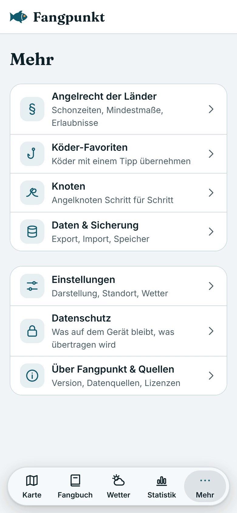

FangpunktIntern
FangpunktIntern
1 · Wo finde ich es?
Mehr → Knoten
Unten in der Leiste auf „Mehr“ tippen, dann auf „Knoten“.
2 · Übersicht
9 Angelknoten mit Einsatzzweck
Filter: Anbinden · Verbinden · Schlaufe · Spule
3 animiert, 6 mit „Animation folgt“
3 · Anleitung
Animation Schritt für Schritt
Eigene schematische Zeichnung – Windungen zur Übersicht vergrößert
„Abspielen“: Die Schnur zeichnet sich Schritt für Schritt
Anhalten, Schritt zurück und weiter
4 · Schrittliste
Jeder Schritt zum Antippen
Ein Tipp springt direkt zur passenden Zeichnung.
5 · Tipps
Tipps zu jedem Knoten
Dazu allgemeine Tipps: anfeuchten, langsam zuziehen, das Ende nicht zu knapp kürzen.
Neu: Knoten
Stand und nächste Schritte
Fertig (Pilot)
- ✓Live in der App unter Mehr → Knoten
- ✓9 Knoten mit Einsatzzweck und Filter
- ✓Animiert: Clinch, Palomar, Uni-Knoten
- ✓Bei „Bewegung reduzieren“ ohne Animation
Offen
- ○Gegenprüfung der drei Anleitungen
- ○Danach animiert: Doppelter Uni, FG, Chirurgen, Perfection Loop, Spulenknoten, Snell
Fehler in einer Anleitung entdeckt? Bitte melden – mit Knoten und Schritt.